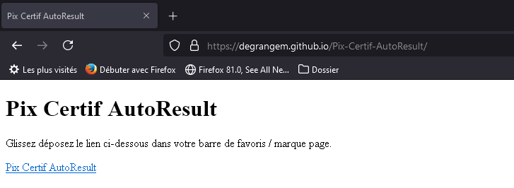

Glissez déposez le lien ci-dessous dans votre barre de favoris / marque page.
Pix Certif AutoResult

Si vous préférez avoir un fichier par classe, vous pouvez glisser le lien ci-dessous à la place.
Pix Certif AutoResult - Multi Fichiers